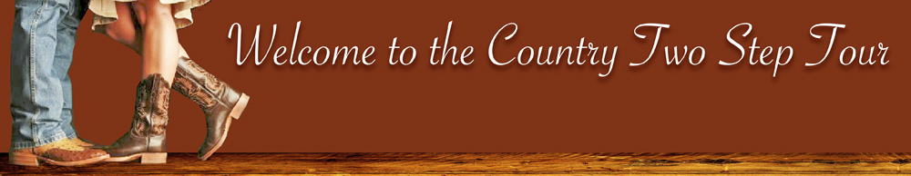

|  | |||||
|
The points championship award shall be calculated each year by adding the awarded points for all member events that properly report their results to the CTST (as described in the current rules). Annual points accumulation shall begin with the first scheduled CTST member event in January and end with the last scheduled CTST member event in December. Please consult the Calendar of Events page for the current listing of CTST sanctioned events. Be advised that additional member events will be added throughout the year as they are approved thus providing even more opportunities for contestants to earn points. The Country Two Step Tour points champions will be announced on the website and on the facebook page as soon as practical following the final event of the year. Please use the links below to view the most current points standings, and to find out where you are in this year’s Points Championship Contest:
|
|||||